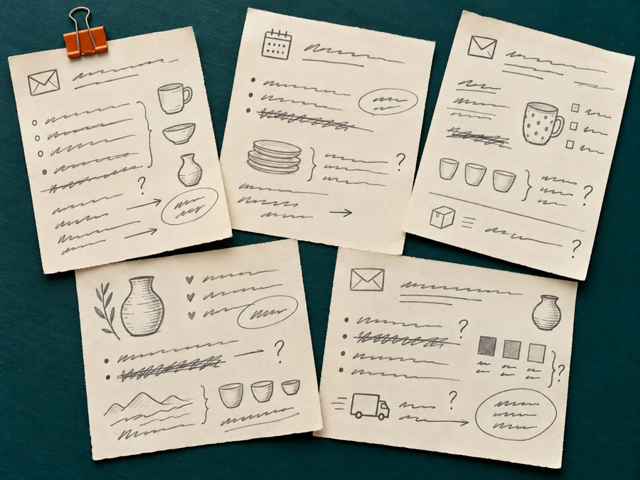
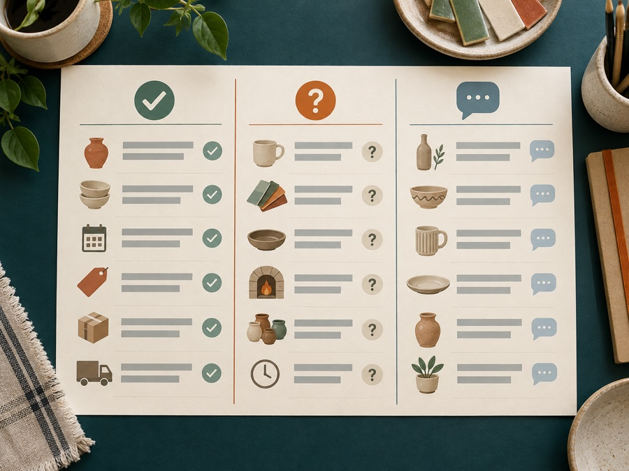

ばらばらの情報を、仕事で使える資料へ整える
ネットショップには、商品情報を5件、10件と同じ形へそろえる仕事があります。
会社や個人事業主には、会議メモから「決まったこと」「担当」「期限」を分ける仕事があります。
依頼主は、元資料と照合され、次の仕事に使える表やメモを受け取るために依頼します。
この特典では、2つの仕事を見ます。
- 架空の商品5件を、同じ5列の表へ整える
- 架空の会議メモを、決定・担当・期限・未決定へ分ける
そのあと、仕事の探し方、応募、条件確認、納品までつなげます。

商品情報がばらばら
同じ列の完成表11月9日10時開始
定員は未決定
告知画像の初稿はXさん、11月2日まで
申込フォームはYさん、11月3日まで
持ち物は講師へ確認が必要
- 決定
- 11月9日10時開始
- 担当
- Xさん／Yさん
- 期限
- 11月2日／3日
- 未決定
- 定員・持ち物
依頼から報酬まで、1本で見る
架空のネットショップ「みどり商店」を例にします。
店主は商品を5件登録したいのですが、情報がメモごとに分かれています。商品名、内容、注意事項、未確認項目を同じ表にしたい。そこで、事務・情報整理を頼みます。
依頼主が有償で頼む作業
- 5商品の元資料を読む
- 指定された5列へそろえる
- 資料にない内容を作らない
- 未確認のことを確認事項へ残す
- CSV（表のデータを保存するファイル）で納品する
受け取る材料
- 商品IDと商品名の一覧
- 5商品の事実メモ
- 必要な列と書き方
- 納品形式、期限、修正条件
納品する物
- 5行×5列のCSVファイル
- 依頼主へ確認する項目の一覧
店主は、確認事項を埋めたあと、商品登録の元資料として使います。商品登録とお客さまへの連絡は、店主が内容を確定してから進めます。
登録準備が進まない
＋
商品の事実メモ
自動整理
＋
確認事項
商品登録に利用
仕事の流れ
クラウドワークスの固定報酬制プロジェクトを使う架空例です。
- 「商品データ 整理」「オンラインアシスタント 情報整理」で募集を探す
- 件数、必要な列、元資料、期限、納品形式、AI利用を読む
- 自主制作の見本と、できる範囲を書いて応募する
- 依頼主と作業範囲、修正、報酬を合意する
- 契約後、依頼主が報酬を先に預ける「仮払い」を確認してから着手する
- 元資料を受け取り、AIへ渡せる情報か確認する
- キットで商品IDを結び、5列と確認リストへ自動整理する
- 人が5件とも元資料と照合し、最初の確認用に作った版「初稿」を渡す
- 合意した範囲を修正して納品する
- 依頼主が納品物を確認する「検収」のあと、報酬を受け取る
依頼形式によって流れは違います。利用するサービスの公式案内と、実際の契約条件を確認してください。
文章作成（商品紹介文）の仕事と、何が違う？
文章作成（商品紹介文）は、1つの商品を読みやすく伝える仕事です。
事務・情報整理は、複数件を同じ項目と基準へそろえる仕事です。
| 仕事 | 中心になる作業 | 完成物 |
|---|---|---|
| 文章作成（商品紹介文） | 1商品の魅力と注意を文章にする | 商品説明文 |
| 事務・情報整理 | 複数商品の項目をそろえ、抜けを見つける | 一覧表＋確認事項 |
5商品を一括で整理しても、内容の確認は5件とも必要です。「まとめて処理する」と「確認を省く」は別です。
本編：5商品を、同じ手順で自動整理する
自動化は「同じ手順を、次の資料でも使える形」にすること
商品が5件追加されるたびに、2つの資料を見比べて列を作ると、IDの取り違えや確認漏れが起きやすくなります。
この実践キットは、入力資料を替えても同じ順で処理します。
- 商品一覧と事実資料を読む
- 商品IDで2つの資料を結ぶ
- 確認済み内容を固定した5列へそろえる
- 空欄と未確認項目を確認リストへ分ける
- 前回を残し、別の実行結果フォルダへ保存する
文章や事実は作りません。元資料を決めた列へ移し、足りない所を見える形にする処理です。
01-products.csv商品名の一覧02-facts.md商品の事実メモ自動結合
提出用_商品一覧.csv不足を分ける確認リスト.csv別runへ保存実行結果.md全行照合5商品確認15件
AI自動化 実践キットを保存する
実機確認した環境は、2026年10月30日時点のApple Silicon搭載Mac、macOS 27.0.1、Python 3.9.6です。
自動整理の処理は、Python 3の標準ライブラリという最初から入っている機能だけで動きます。処理のために追加のPythonパッケージ、APIキー、従量課金の連携は使いません。ChatGPTとCodexは、このあと説明する公式手順で準備します。Windows、Linux、Intel Macは実機未確認です。
保存したZIPを開く
- Finderで、ZIPを保存した場所を開く
AI自動化_実践キット.zipをダブルクリックする- 新しくできた
AI自動化_実践キットフォルダを開く - 最初に
README.mdを開き、全体の流れを読む
最初の完成見本は、次の順にフォルダを開くと見つかります。
AI自動化_実践キット → 出力見本 → run-20261030-235033-764921 → 提出用_商品一覧.csv
同じrunフォルダには、確認リスト.csvと実行結果.mdも入っています。
Codexを初めて使う方へ
Codexは、ChatGPTデスクトップアプリのメニューから選べる作業画面です。この特典では、選んだフォルダのファイルを読み、自然な文で自動整理を頼むために使います。
OpenAI公式：ChatGPT／Codexクイックスタート
Macでは、次の順に始めます。
- 公式クイックスタートからChatGPTデスクトップアプリを入れる
- ChatGPTアカウントでサインインする
- 作業場所として、展開した
AI自動化_実践キットフォルダを開く - ChatGPTの選択メニューから
Codexを選び、新しいチャットを開く
この実践キットで実測したのは、Apple Silicon搭載Macでのローカル自動整理です。デスクトップアプリの表示、利用可否、上限は、現在の公式案内と自分のアカウント画面で確認してください。現在の契約に含まれるとは断定しません。
入力するのは2ファイル
キット内の入力例フォルダを右クリックし、「複製」を選びます。複製したフォルダ名を今回の入力などへ変え、中の2ファイルを今回の依頼資料へ差し替えます。
01-products.csv
商品IDと商品名の一覧です。商品IDは、2つの資料で同じ商品を結ぶ番号です。
02-facts.md
商品ID、確認済み内容、未確認項目の表です。資料で確認できない寸法や条件は、未確認項目へ残します。
元の入力例は架空の5商品です。実際の依頼資料へ替える前に、依頼主の情報管理ルールと、Codexへ渡してよい範囲を確認します。
複製した入力フォルダをFinderで選びます。Optionキーを押しながら右クリックし、「“今回の入力”のパス名をコピー」を選ぶと、フォルダの場所をコピーできます。表示名はmacOSの版によって少し違う場合があります。
Codexへ自然な文で頼む
キット内の Codexへ渡す依頼文.txt を開きます。
「ここへ、差し替えた入力フォルダの場所を入れる」の部分だけを変え、全文をCodexへ渡します。Pythonの命令を覚える必要はありません。
CodexはREADMEを読み、ローカルで自動整理を1回実行します。入力ファイルは変更せず、キット内の outputs/run-日時/ へ新しい結果を保存します。
同じ入力でもう1度実行すると、別のrunフォルダができます。前回の結果は残ります。
自動で出る3ファイル
提出用_商品一覧.csv
商品ID、商品名、確認済み内容、確認事項、根拠の5列です。
| 商品ID | 商品名 | 確認済み内容 | 確認事項 | 根拠 |
|---|---|---|---|---|
| P-001 | 窓辺のバジル栽培セット | 鉢1個・培養土1袋・種1袋・育て方カード1枚。室内向け。日当たりのよい窓辺で育てる。 | 鉢の実寸／種の量／返品条件 | 2つの入力ファイルのP-001 |
| P-002 | ハーブティー入門セット | カモミール・ミント・レモングラスの3袋。各袋の内容量は商品台帳で確認が必要。 | 各袋の内容量／賞味期限／保存方法 | 2つの入力ファイルのP-002 |
| P-003 | 木のスプーン2本組 | 天然木のスプーン2本。食器用。手洗いを案内する。 | 樹種／全長／食洗機の可否 | 2つの入力ファイルのP-003 |
| P-004 | コットン巾着 | 生成り色の巾着1枚。小物入れ用。 | 寸法／生地の混率／洗濯方法 | 2つの入力ファイルのP-004 |
| P-005 | 朝のメモ帳 | 方眼40ページ。1冊。表紙は深い緑。 | 本体寸法／紙の種類／製造国 | 2つの入力ファイルのP-005 |
確認リスト.csv
依頼主へ確認する項目を、商品ごとに分けた表です。入力例では5商品から15件が出ます。
実行結果.md
処理した商品数、確認事項の件数、自動で行ったこと、人が確認すること、入力ファイルの確認値を記録します。
CSVは、日本語が文字化けしにくいUTF-8という保存方式です。Excelなどで開いたときに日本語を読みやすくする印も付いています。
提出用_商品一覧.csv5行 × 5列P-001〜P-005確認リスト.csv15件依頼主へ確認する項目実行結果.md商品数 5件自動処理と人の確認自動になる所、人が行う所
自動になる所
- 商品IDで2資料を結ぶ
- 固定した5列へそろえる
- 空欄と未確認項目を確認リストへ分ける
- 前回を残し、別のrunフォルダへ保存する
人が行う所
- 5件すべてを元資料と見比べる
- 確認事項を依頼主へ聞く
- 回答を元資料へ反映する
- 契約条件に合う形式で納品する
定期起動や顧客への自動送信は、このキットの範囲に含みません。依頼主の確認を飛ばさず、繰り返し作業の列合わせと不足確認を速くする仕組みです。
新しい依頼でもう1度使う
次の依頼では、複製した入力フォルダの2ファイルだけを差し替えます。同じ依頼文をCodexへ渡すと、新しいrunフォルダへ結果が出ます。
依頼主が求める列が違う場合は、勝手に列を変えません。必要な列と完成例を確認し、Codexへスクリプトの変更を頼みます。変更後は架空資料で試し、列、欠落、前回出力の保持を確認してから実際の資料へ進みます。
練習した時間を記録する
応募前に、自分が実際にかかった時間を残します。決まった分数を目標にするのではなく、見積もりと期限を考える材料にします。
| 記録する所 | 自分の時間 |
|---|---|
| 入力2ファイルの準備 | 分 |
| 自動整理の実行 | 分 |
| 5商品の照合と修正 | 分 |
| 納品ファイルの確認 | 分 |
資料の量や不足情報によって作業時間は変わります。この練習の時間だけで、別の依頼にかかる時間を断定しません。
実践2：会議メモを、次に使える形へ整える
会議メモ整理も、有償の事務作業です
依頼主が会議後に知りたいのは、話した内容を全部並べた文章だけではありません。
何が決まり、誰が、いつまでに動くのか。まだ決まっていないことは何か。
そこが分かる資料へ整えると、会議後の連絡や進行に使えます。
架空の入力メモ
10月30日 冬のハーブ教室の準備会議
11月9日10時開始で進める
定員はまだ決めていない
告知画像の初稿はXさん、11月2日まで
申込フォームはYさんが11月3日までに作る
持ち物は筆記用具でよいか、講師へ確認が必要
次回確認は11月4日15時AIへ送る指示
次の架空の会議メモを、会議後に仕事で使える形へ整理してください。
【分ける項目】
・決まったこと
・担当と期限
・未決定、確認が必要なこと
・次回確認
入力にない担当、期限、定員、持ち物は足さないでください。
人名は入力どおりXさん、Yさんと書いてください。完成例
決まったこと
- 冬のハーブ教室は11月9日10時開始で進める
担当と期限
| 作業 | 担当 | 期限 |
|---|---|---|
| 告知画像の初稿 | Xさん | 11月2日 |
| 申込フォームの作成 | Yさん | 11月3日 |
未決定・確認が必要
- 定員
- 持ち物を筆記用具にしてよいか、講師へ確認
次回確認
- 11月4日15時
この完成例は架空です。元メモにない担当や期限は足していません。
納品前の確認
- 日付と時刻が元メモと同じか
- Xさん、Yさんの担当が入れ替わっていないか
- 未決定の定員を、決定として書いていないか
- 確認が必要な持ち物を断定していないか
- 依頼主が指定した形式で保存できているか
会議の録音や実名をAIへ渡す場合は、依頼主のルール、参加者への案内、利用サービスの条件を確認します。この練習では、架空メモだけを使います。
仕事を探して、条件を読む
検索する言葉
- 商品データ 整理
- EC 商品登録 補助
- オンラインアシスタント 情報整理
- 会議メモ 議事録 整理
- データ入力 AI 利用可
検索結果の件数や表示価格は変わります。掲載があることは、初心者でも受注できる証明や相場の証明ではありません。
架空の募集文から、8項目を取り出す
商品情報5件を、指定の5列へ整理する方を募集します。商品CSVと事実メモを支給します。納品はCSV。初稿は3日後、修正は1回。AIは使用前に相談してください。顧客情報は含みません。報酬は応募前の条件欄を確認してください。
この募集は練習用の架空例です。
取り出す項目は、仕事、件数、材料、必要な列、形式、期限、修正、AI条件です。
| 項目 | この募集の内容 |
|---|---|
| 仕事 | 商品情報の整理 |
| 件数 | 5件 |
| 材料 | 商品CSV、事実メモ |
| 必要な列 | 指定の5列 |
| 形式 | CSV |
| 初稿 | 3日後 |
| 修正 | 1回 |
| AI条件 | 使用前に相談 |
報酬額だけで決めず、件数、列数、元資料の状態、修正、連絡、秘密情報の扱いを見ます。
応募文の架空例
はじめまして。商品情報5件を指定の列へ整理するお仕事に応募します。
自主制作の架空見本として、5商品をCSVへ整理した例があります。元資料との照合、未確認項目の切り分け、CSVでの納品まで対応できます。
Codexと自動整理キットを使い、商品IDで資料を結びます。商品名、数字、仕様、確認事項は元資料と見比べます。AIの利用可否と、AIへ渡せない情報があれば着手前に確認します。
初稿期限、指定の5列、修正1回を確認しました。
確認したい点は、提出用5列の正式名と、CSVを開く表計算ソフトです。実際に送る前に、経験や実績を盛っていないかを読み返します。自主制作の見本は、その事実が分かる書き方にします。
応募前の判定
次の5点がそろった仕事から検討します。
- 募集で求める列と形式を、見本で再現できる
- 1行を直し、もう一度実行して別の出力へ残せる
- 初稿期限、連絡方法、修正回数に対応できる
- 依頼主が指定する形式で納品できる
- AI利用と秘密情報の条件を守れる
分からない条件は、応募前に質問します。練習回数だけで受注できるとは判断しません。
条件を合意する
着手前に、次を文章で残します。
- 何件を、何列へ整理するか
- どの資料を正とするか
- AIを使ってよいか、渡してはいけない情報は何か
- 初稿と最終納品の期限
- 修正回数と、追加作業の扱い
- CSV、XLSX（Excel形式のファイル）、文書などの納品形式
- 報酬、手数料、支払条件
価格は、件数、列数、元資料の状態、確認量、修正、期限、使用するサービスの手数料などで変わります。この特典では平均相場を断定しません。
初稿・修正・納品
初稿を渡すとき
商品情報5件の初稿を共有します。
納品候補：提出用_商品一覧_初稿.csv
確認事項：確認リスト.csvへまとめています。
P-001〜P-005の5件、指定の5列で作成しました。
未確認項目は推測せず、確認事項へ残しています。
内容をご確認いただき、合意した修正範囲でご連絡ください。修正を受けたとき
修正内容を、対象ID、変更前、変更後、理由に分けます。
「全体をいい感じに」など範囲が分からない依頼は、勝手に解釈せず、対象行と希望を確認します。追加の商品や列は、合意した作業に含むか確認します。
納品するとき
修正内容を反映し、最終版を納品します。
納品物：商品一覧_最終.csv
件数：5件
列：商品ID、商品名、確認済み内容、確認事項、根拠
初稿から変更した箇所は、P-003の食洗機表記です。
未確認事項は確認事項の列へ残しています。
ファイルを開き、5行×5列と日本語表示を確認済みです。納品後、依頼主の検収を待ちます。修正が来たら契約範囲を確認し、必要な対応を行います。検収後に、利用サービスの流れに沿って報酬を受け取ります。
今日の行動
今日は実践キットを保存して展開し、出力見本/run-20261030-235033-764921/提出用_商品一覧.csvを開きます。P-003の1行だけを、入力例の2ファイルと見比べてください。
次回以降は、入力例で自動整理を実行し、別の商品資料へ入れ替えます。会議メモの整理、募集条件の読み取り、応募文、初稿、修正、納品は、そのあと順番に進めます。
依頼主が次の仕事に使える表へ整い、元資料との違いを説明できたら完成です。
付録：ChatGPTで商品説明の下書きを見る（任意）
実践キットは、確認済み内容をそのまま5列へ整理します。商品説明文は作りません。
ここからは、同じ架空資料をChatGPTへ渡し、商品説明の下書きを作る任意体験です。
自動整理キットの5列は「商品ID／商品名／確認済み内容／確認事項／根拠」。
ChatGPT体験の5列は「商品ID／商品名／説明の下書き／内容・仕様／確認事項」です。用途が違うため、同じ5列として混ぜません。
先に完成した形を見てください
完成表は、商品ID、商品名、説明の下書き、内容・仕様、確認事項の5列です。
| 商品ID | 商品名 | 説明の下書き | 内容・仕様 | 確認事項 |
|---|---|---|---|---|
| P-001 | 窓辺のバジル栽培セット | 室内でバジルを育て始めるためのセットです。 | 鉢1個、培養土1袋、種1袋、育て方カード1枚 | 鉢の実寸、種の量、返品条件 |
| P-002 | ハーブティー入門セット | カモミール、ミント、レモングラスを試せるセットです。 | 3袋。各袋の内容量は未確認 | 内容量、賞味期限、保存方法 |
| P-003 | 木のスプーン2本組 | 天然木のスプーン2本組です。 | 食器用。手洗いを案内 | 樹種、全長、食洗機の可否 |
| P-004 | コットン巾着 | 小物を入れられる生成り色の巾着です。 | 1枚 | 寸法、生地の混率、洗濯方法 |
| P-005 | 朝のメモ帳 | 深い緑の表紙を使った方眼メモ帳です。 | 1冊、40ページ | 本体寸法、紙の種類、製造国 |
この表は架空の練習例です。
「P-003は天然木だから食洗機で使える」のような推測は入れません。資料にないことは確認事項へ残します。
依頼主は、この表を見て不足情報を確認し、商品登録へ進めます。完成表の利用場面まで見えると、何のために整えるのか分かります。
AIへ渡す4列の練習CSV
CSVは、ExcelやGoogleスプレッドシートなどで開けます。
今回の入力は、商品ID、商品名、確認済み内容、未確認項目の4列です。
商品ID,商品名,確認済み内容,未確認項目
P-001,窓辺のバジル栽培セット,"鉢1個・培養土1袋・種1袋・育て方カード1枚。室内向け。日当たりのよい窓辺で育てる。",鉢の実寸・種の量・返品条件
P-002,ハーブティー入門セット,"カモミール・ミント・レモングラスの3袋。各袋の内容量は商品台帳で確認が必要。",各袋の内容量・賞味期限・保存方法
P-003,木のスプーン2本組,"天然木のスプーン2本。食器用。手洗いを案内する。",樹種・全長・食洗機の可否
P-004,コットン巾着,"生成り色の巾着1枚。小物入れ用。",寸法・生地の混率・洗濯方法
P-005,朝のメモ帳,"方眼40ページ。1冊。表紙は深い緑。",本体寸法・紙の種類・製造国人が照合
ChatGPTで一括下書きする
ChatGPTで新しいチャットを開きます。
CSVを添付できる場合はファイルを付け、次の指示を送ります。添付を使わない場合は、CSVの全行を指示文の下へ貼ります。
架空の商品5件を、商品管理の下書きへ整理してください。
【守ること】
・確認済み内容だけを使う
・未確認項目は推測で埋めず、確認事項へ残す
・商品ID、商品名、説明の下書き、内容・仕様、確認事項の5列で出す
・効能、品質、素材、サイズ、産地、価格など、資料にない情報を足さない
・5商品を省略しない
・最後にCSV形式でも出す
添付したCSVを入力として使ってください。ChatGPTのファイル添付は、利用プラン、設定、端末によって表示や上限が変わります。添付できないときは、今回の短い架空CSVを本文へ貼って進めます。
実際の仕事では、依頼主の許可なく、氏名、住所、電話番号、メール、注文番号、社外秘の資料をAIへ渡しません。利用するAIサービスのデータ条件も確認します。
返ってきたら、5件とも確認する
見る場所は5つです。
- P-001〜P-005が全部あるか
- 商品名と内容・仕様が元資料と同じか
- 未確認項目が確認事項に残っているか
- 資料にない効果、素材、サイズ、価格を足していないか
- 5列の順番とCSVの形がそろっているか
1件でも違えば、その場所を指定して直します。
修正前
木のスプーン2本組。食洗機でも使えます。
「食洗機の可否」は未確認です。使えると断定できません。
修正依頼
P-003だけ修正してください。
「食洗機でも使えます」は資料にないため削除してください。
食洗機の可否は確認事項へ残してください。
P-001、P-002、P-004、P-005は変更しないでください。
修正後の5列をもう1度出してください。修正後
内容・仕様：天然木のスプーン2本。食器用。手洗いを案内。
確認事項：樹種、全長、食洗機の可否
直したあとも、P-003の元資料へ戻って見比べます。
元資料：「手洗いを案内する」まで
保存して、開き直す
スマホでは、5件の表と確認事項をメモへコピーします。P-001〜P-005が読めるか、保存後に開き直します。
パソコンでは、CSVを保存し、ExcelやGoogleスプレッドシートなどで開きます。
次を確認できたら、商品表の練習は完成です。
- 5行がある
- 5列に分かれている
- 日本語が崩れていない
- 確認事項が残っている
- 元の練習CSVも別に残っている
「AIが回答した」で終わらず、「保存した表を開き直せた」まで進めます。